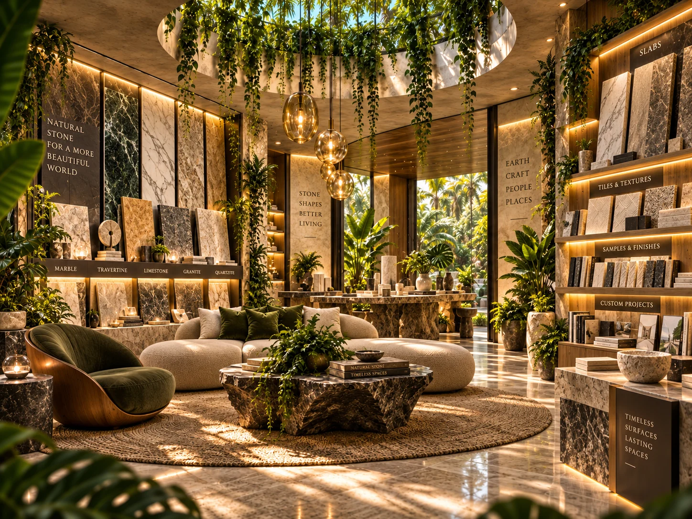
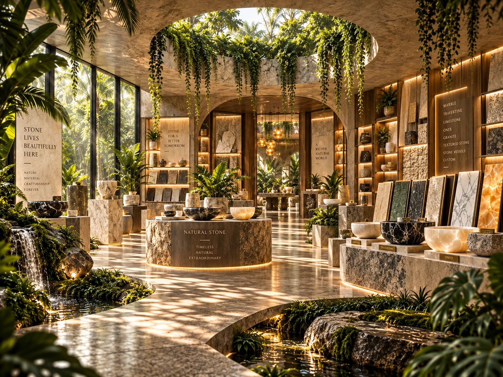
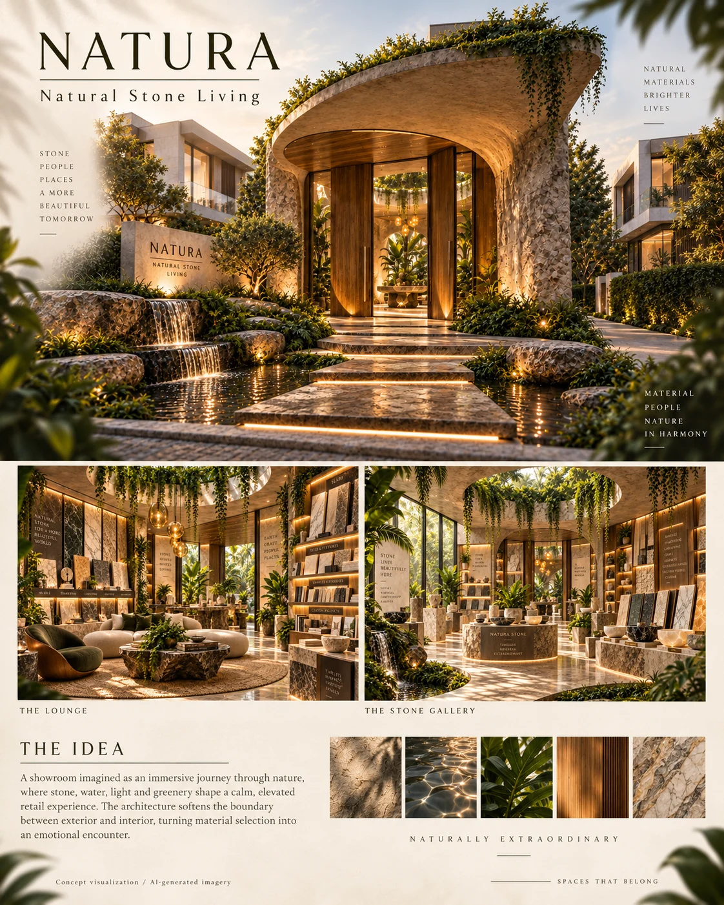
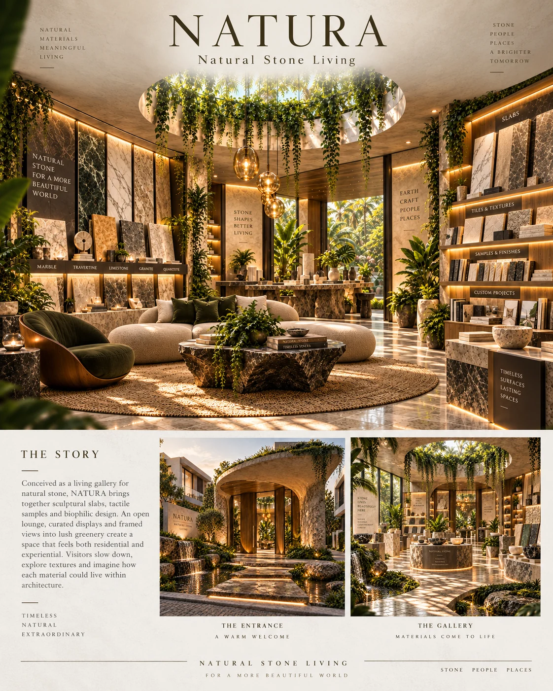
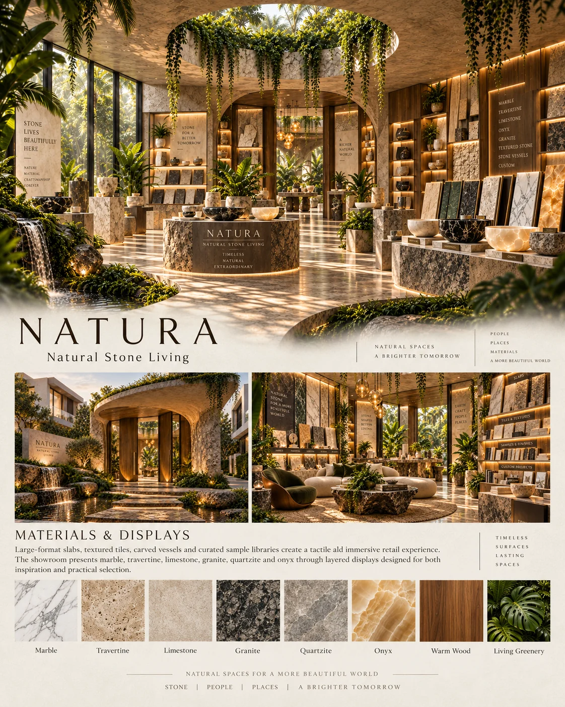
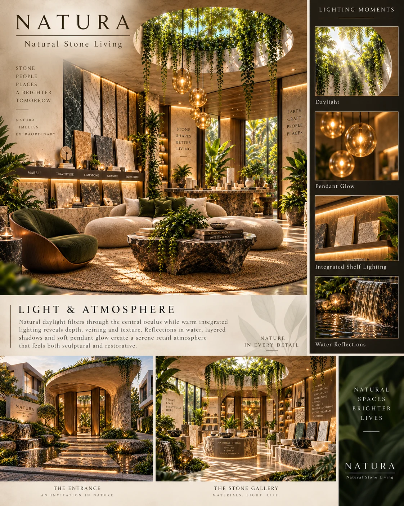

Biophilic natural stone showroom
NATURA
Natural spaces for a more beautiful world.

NATURA is a natural-stone showroom concept conceived as a living gallery. Set within a residential streetscape, it brings stone, warm timber, water and planting into the experience of discovering materials. Inside, a planted oculus creates a central point of daylight. Vertical slab displays, illuminated sample shelves and a consultation lounge make the commercial offer visible while helping visitors imagine the materials in their own projects.
Material direction
Natural stone, including marble, travertine, limestone, granite, quartzite and onyx; warm timber; glass; bronze details; neutral upholstery; planting and water.
My role
Concept design, creative direction and visual storytelling — Maria Andriiuk.
Concept & atmosphere
Material selection as an immersive encounter. Natural stone is shown both as a product and as part of the surrounding architecture, connecting samples with possible applications.
Signature elements
A curved stone-and-timber entrance; a planted oculus; vertical slab displays; illuminated sample libraries; stone objects and vessels; a consultation lounge.
Lighting direction
Daylight reveals stone texture and variation. Integrated shelf lighting highlights samples and veining, while pendant lighting creates a softer setting around the consultation tables.
Experience & journey
The entrance leads to a welcoming lounge, then a slab gallery and sample displays. The sequence ends with consultation and discussion of possible residential or hospitality applications.
Scope of work
Core concept and narrative; spatial atmosphere; material and colour direction; lighting mood; experience sequence; concept views and presentation.

Welcome Lounge Interior view showing the consultation lounge, slab displays, shelving, oculus and biophilic atmosphere.Open full size ↗
Stone Gallery Interior view focused on product merchandising, large-format slabs, vessels, sample libraries and natural stone displays.Open full size ↗
The Idea Editorial presentation board explaining the project concept.Open full size ↗
The Story Editorial board presenting the showroom narrative.Open full size ↗
Materials & Displays Presentation board focused on natural stone categories and merchandising.Open full size ↗
Light & Atmosphere Presentation board explaining daylight, integrated lighting, pendants and water reflections.Open full size ↗